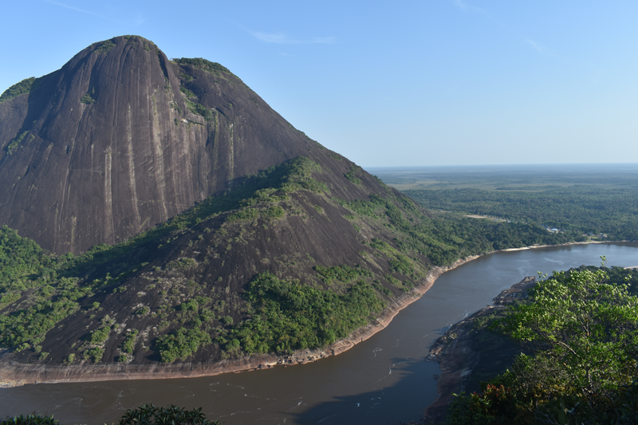
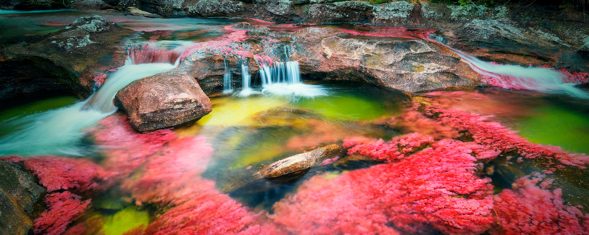
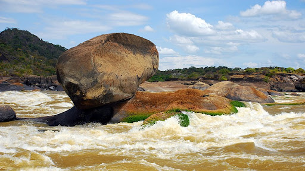
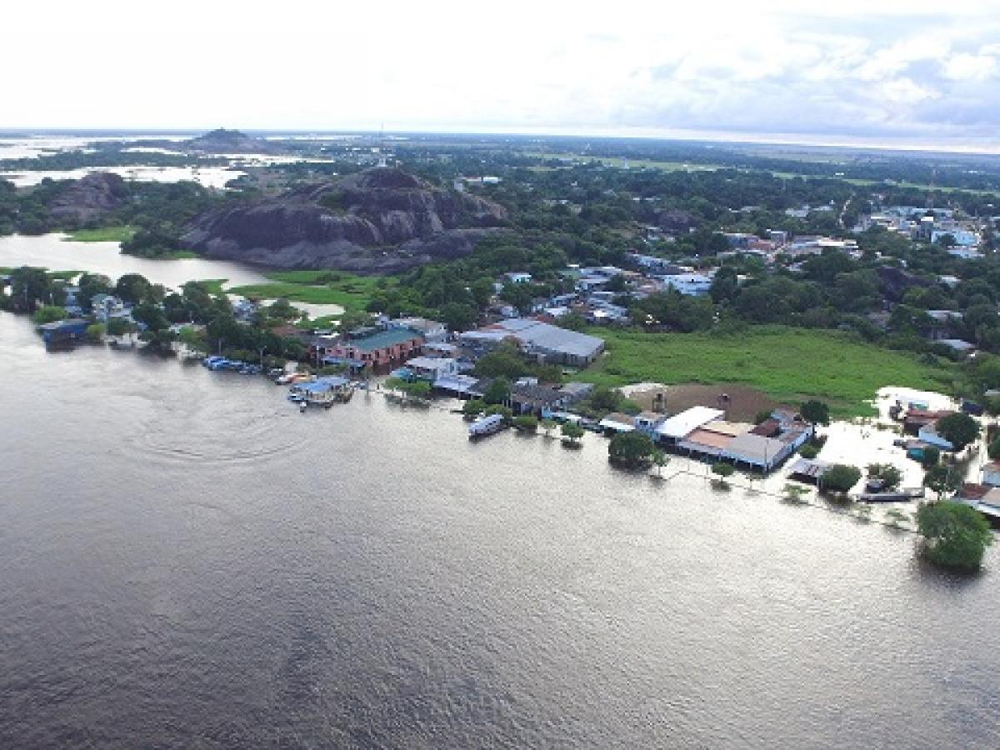

Principales sitios turísticos
Río Orinoco y afluentes
Los ríos y paisajes naturales son el principal atractivo: navegación, pesca y observación de fauna. El río Orinoco es uno de los ríos más importantes de América del Sur (además del río Amazonas) que nace y discurre por Venezuela, en un tramo de su recorrido hace de frontera con Colombia. Es el cuarto río sudamericano más largo — 2140 km— y, con un caudal promedio 39 000 m³/s, es el tercer río más caudaloso del mundo, después del Amazonas y del Congo. Su cuenca tiene una superficie de casi 989 000 km², de los que el 65 % quedan en territorio venezolano y el 35 % restante en territorio colombiano.
Serranía de la Macarena (áreas cercanas) y ecosistemas de sabana
Experiencias de naturaleza y vida rural. La sierra o serranía de la Macarena es una cadena montañosa colombiana, ubicada en el departamento del Meta, en el piedemonte andino en la selva amazónica, es el punto de encuentro de los ecosistemas andinos, amazónicos, orinocenses y guyaneses. Habitada por campesinos herederos de un proceso reciente de colonización, motivado por la expulsión violenta de campesinos desde mediados del siglo XX, La Macarena es reconocida tanto por su importancia físicobiótica como por los múltiples conflictos que la cruzan.
Parque Nacional Natural El Tuparro
Experiencias de naturaleza y vida rural. El parque nacional natural El Tuparro se encuentra ubicado en la Orinoquía en Colombia. Su superficie hace parte del departamento de Vichada. Fue creado en 1970, se extiende por un área de 548.000 ha y está bañado por los ríos Tomo al norte, y los ríos Tuparro, Tuparrito y Caño Maipures al sur. El parque es un santuario de aves, orquídeas, monos, serpientes y toninas (delfines rosados de agua dulce). Allí existe también un antiguo cementerio que perteneció a la nación indígena de los maipures, hoy desaparecidos. Este parque debe su nombre al Río Tuparro, pequeños cerros de altura inferior a 900 m., restos del antiguo macizo de Guayana, compuestos de cuarzo y que se consideran actualmente como unas de las montañas más antiguas del continente.
Puerto Carreño
Puerto Carreño es un municipio colombiano, ciudad fronteriza y capital del departamento del Vichada. Es reconocido como un destino para el turismo sostenible, un punto de encuentro ecológico para organizaciones no gubernamentales, un centro cultural indígena y el principal puerto fluvial del país sobre el río Orinoco.
Otros sitios turísticos
- Raudal del Maipures
Comida típica
En Vichada predominan preparaciones con productos de río y ganadería.
- Pescado fresco preparado a la parrilla o en sopas
- Platos con yuca y maíz
- Carne de res asada y productos lácteos locales
Información económica y ocupacional (estadística)
Vichada tiene una economía con fuerte presencia de agricultura y ganadería —en 2022 estas actividades representaban una proporción importante del valor agregado departamental—; la administración pública y el comercio también son relevantes en la estructura productiva local.
Indicadores laborales
- Tasa de desempleo: Vichada ha registrado tasas de desempleo por encima del promedio nacional en algunos periodos; por ejemplo, cifras mostraron tasas de desempleo del entorno del 12–13% a diciembre de 2023 (ver fuentes oficiales para la cifra exacta del periodo que necesites).
- Participación laboral: presencia de empleo en agricultura, administración pública y comercio.
Para trabajos formales o académicos, usa las publicaciones del DANE y los perfiles del MinCIT/UPRA para cifras oficiales y actualizadas.